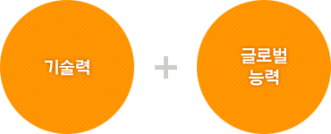
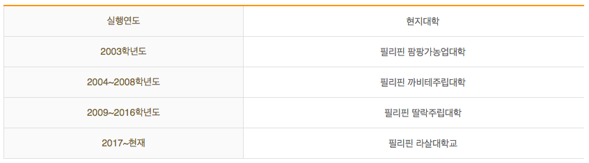

국가와 기업에서 요구하는 인재를 양성

취업 등 대외 경쟁 우위 선정
해외현지 생활체험을 통하여 외국어 활용능력 향상
연혁

수행실적
2007년 현지학기제: 50명 중 13명 공인토익 550점 이상 획득
2008년 현지학기제: 50명 중 22명 공인토익 550점 이상 획득
2009년 현지학기제: 49명 중 18명 공인토익 550점 이상 획득
2010년 현지학기제: 50명 중 23명 공인토익 550점 이상 획득
2011년 현지학기제: 46명 중 29명 공인토익 550점 이상 획득
2012년 현지학기제: 53명 중 16명 공인토익 550점 이상 획득
2013년 현지학기제: 42명 전원 Speaking&Writing 프로그램 수료
2014년 현지학기제: 40명 중 11명 공인토익 550점 이상 획득
2015년 현지학기제: 39명 중 7명 공인토익 500점 이상 획득
2016년 현지학기제: 47명 중 18명 공인토익 400점 이상 획득
2017년 현지학기제: 39명 중 17명 공인토익 400점 이상 획득
2018년 현지학기제: 41명 중 22명 공인토익 400점 이상 획득
2019년 현지학기제: 27명 스피킹 점수 평군 19%향상, 라이팅 점수 평균 98.7% 향상
일본생활 적응력 향상 및 취업률 제고를 위한 일본현지학기제 운영
2010년부터 일본 IT기업 주문반 학생들을 대상으로 일본 현지에서 현지학기제 운영
2011년 현지학기제: 참여자 30명, 4주간 실시
2012년 현지학기제: 참여자 38명, 6주간 실시
2013년 현지학기제: 참여자 34명, 6주간 실시
2014년 현지학기제: 참여자 34명, 6주간 실시
2015년 현지학기제: 참여자 38명, 6주간 실시
2016년 현지학기제: 참여자 56명, 6주간 실시
2017년 현지학기제: 참여자 63명, 6주간 실시
2018년 현지학기제: 참여자 44명, 6주간 실시
2019년 현지학기제: 참여자 91명, 6주간 실시
일본현지에서 일본어교육과 일본문화 탐방, 일본기업 견학 실시